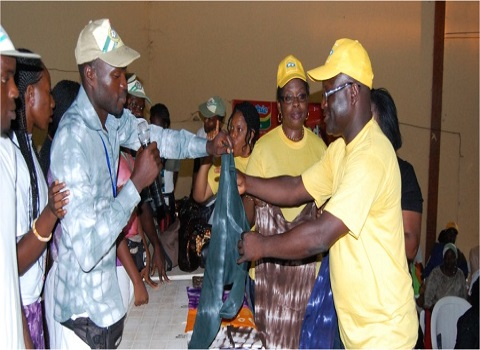
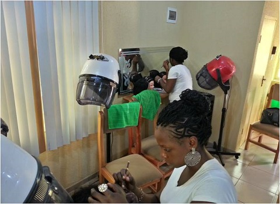
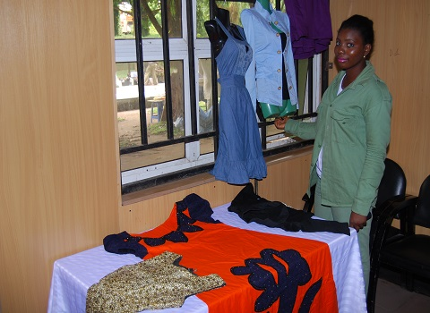

ABOUT SAED
SAED is the acronym for the Skills Acquisition and Entrepreneurship Development of the NYSC. The SAED unit is the Training and Empowerment Arm of the NYSC. Presently, SAED is into job awareness, acquisition of various skills and the mentoring of corps members in various aspects of life. Every NYSC State Secretariat has a SAED centre where corps members can gain easy access to references and intellectual empowerment. SAED has been established in all the 36 states of the federation and has entered into partnership with various well-meaning private and public organizations.
SAED STANDS FOR:
Mission
To empower corps member with viable skills and experienceVision
To be a citadel of innovations, learning and training for Nigeria youthsCore Values
Commitment. Passion. Result-Oriented. Team WorkDepartment
The Department is headed by a Director and is made up of two divisions namely:- Skills Acquisition Division and
- Entrepreneurship and Empowerment Division
OUR FUNCTIONS
Functions of the department include:
- Sensitize and mobilize 200, 000 young graduates for skills acquisition annually
- Facilitate the training and mentoring of 100, 000 young graduates in skills acquisition and entrepreneurship development for self-reliance annually
- Promote public-private partnership for entrepreneurship development and self-reliance amongst Nigerian youths
- Promote documentation and sharing of best practices on youth empowerment in Nigeria
- Support evidence-driven advocacy efforts for favorable policies on youth empowerment in Nigeria
- Sensitization and mobilization of corps members for enrollment into the Skills Acquisition and Entrepreneurship Development program
- Development of a standard curriculum for the in-camp skills acqusition exercise
- Identification of organizations at state level to provide training and mentoring in specific skills sets
- Attachment of the corps members to the various organizations for Skills Acquisition and Entrepreneurship Development
- On-going monitoring and supervision of trainee corps members
- Facilitate access to available funding opportunities
SAED GALLERY
CONTACT US
NYSC Directorate Headquarters
Plot 416, Tigris Crescent
Off Aguiyi Ironsi Street, Maitama.
PMB 138, Garki ,Abuja.
SMS Message
09-2912257
info@nysc.gov.ng
NYSC Directorate Headquarters
Plot 416, Tigris Crescent
Off Aguiyi Ironsi Street, Maitama.
PMB 138, Garki ,Abuja.
SMS Message
09-2912257
info@nysc.gov.ng